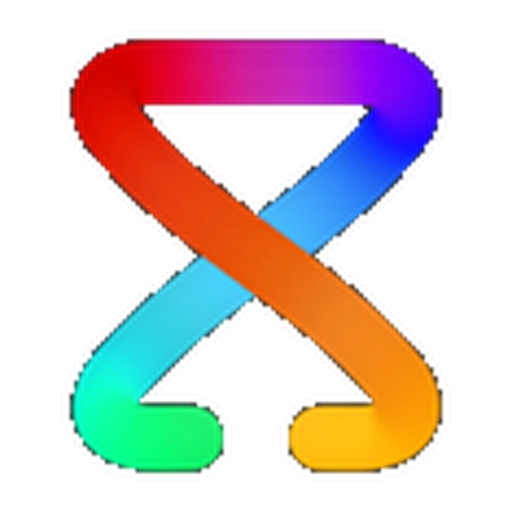
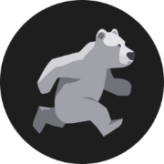
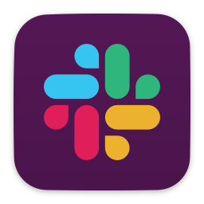
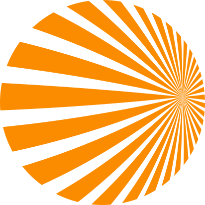
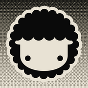
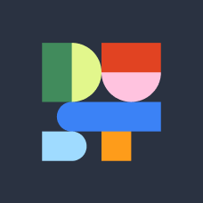

~7个月翻一倍
2019—2025 长期趋势；2024 年以来加速到约 89 天翻一倍。
METR《Time Horizon 1.1》· 2026-01-29 · 示意曲线
三种形态并不互相替代：同一产品往往同时提供多个入口，IDE 正在成为 Agent 空间中的一个视图。
 CopilotTRAECodeBuddy
CopilotTRAECodeBuddy CursorCursor Agent
CursorCursor Agent Codex
Codex Claude CodeAgents WindowQoder CN
Claude CodeAgents WindowQoder CN依据：《Code Agent 产品体验设计分析报告》（覆盖 Claude Code、Codex、Cursor、CodeBuddy、Qoder、Trae，2026-08-30）；Cursor 3 发布 2026-04-02。
我们的三条产品线踩在前两波上；第三波在 2026 年 9—11 月集中出现，是明年的探索方向。
竞争从模型转向脚手架，IDE 与 Agent 工作台合一
Claude Code2025.02 预览Codex 云端 Agent2025.05Cursor 32026.04 多 Agent 并行
CodeArts 码道CodeAgent 客户端Agent 从工具变成队友：派发、交接、审查与复用
 Managed Agents · Multica2026.04Claude Tag2026.06Cursor Projects2026.09多人版 · Devin Bots2026.11
Managed Agents · Multica2026.04Claude Tag2026.06Cursor Projects2026.09多人版 · Devin Bots2026.11常驻、主动、跨应用，有自己的身份与授权边界
 Meta Muse9/8
Meta Muse9/8 Cue · dots9/28 · 9/29
Cue · dots9/28 · 9/29 Grok Bot 1.011/11
Grok Bot 1.011/11来源：各产品官方发布页与报道，汇总于《年底工作汇报大纲（1 小时详细版）》附录 A 与《团队级 Agent 产品竞品研究报告》，核验 2026-11-11 / 11-18。时间轴按月线性排布。
码道代码智能体 IDE 的直接对手是 TRAE、Qoder、CodeBuddy 与 Cursor；竞争重心从补全效率转向工程级任务。
内外同源 · 多端一致 · 注册 86 万
双模式 · 三端同步 · 并入豆包
编码为底座 · 走向全民
内部普及 · 向办公外溢
CursorAgent-first · 项目与团队
同一家公司内部出现多条产品线并行，边界开始交叉；码道多端矩阵与 AgentSpace 处在同一演进方向上。
 字节跳动
字节跳动 千问办公整合 QoderWork 等 · 客户端与网页OpenAICodex IDE 扩展 · CLI编码现场Codex 桌面应用 · 云端多 Agent 并行 · 可复用云环境dotsChatGPT 内常驻 Agent · 2026.09Claude Code IDE 扩展 · CLI终端优先Claude 客户端 · Claude Code桌面与 Web，共享同一引擎Claude Tag · Managed AgentsSlack 频道共享 · 托管会话CursorCursor IDEAI 原生编辑器Agents WindowCursor 3 · 2026.04Projects 多人版共享上下文与看板 · 2026.11
千问办公整合 QoderWork 等 · 客户端与网页OpenAICodex IDE 扩展 · CLI编码现场Codex 桌面应用 · 云端多 Agent 并行 · 可复用云环境dotsChatGPT 内常驻 Agent · 2026.09Claude Code IDE 扩展 · CLI终端优先Claude 客户端 · Claude Code桌面与 Web，共享同一引擎Claude Tag · Managed AgentsSlack 频道共享 · 托管会话CursorCursor IDEAI 原生编辑器Agents WindowCursor 3 · 2026.04Projects 多人版共享上下文与看板 · 2026.11使用向“能委托完整任务”的产品集中；补全型助手的领先优势在收窄，云端与并行成为新分水岭。
Claude CodeGitHub CopilotOpenAI CodexCursor OpenCode
OpenCode Antigravity
AntigravityJetBrains Research《AI Coding Agents: Adoption Trends》· Developer Ecosystem Survey 2026，15,000+ 职业开发者
Claude CodeCLI
Claude CodeWeb
Codex云端
Qoder CN
TRAE
CodeBuddy
Cursor
Cursor 3定位依据：《Code Agent 产品体验设计分析报告》2026-08-30；Cursor 3 云端 Agent 2026-04-02。
四个方向最终都落到同一个体验难题：让用户看得懂、管得住、交得出。
任务从哪里都能发起与跟进
Cursor · 2026.04可从桌面、移动、Web、Slack、GitHub、Linear 发起 AgentGitHub · 2026.06Copilot 桌面应用，作为编码 Agent 的工作台一个人同时管理多个 Agent
Anthropic · 2026.02Claude Code Agent Teams：主会话协调多个队员（实验特性）Cursor · 2026.04Agents Window 跨仓库、跨环境并行运行多个 AgentOpenAI · 2026.04 / 09Codex 多 Agent 并行，新增 /agents 视图集中跟踪离开电脑，工作仍在推进
Anthropic · 2026.04Managed Agents 将会话记录、执行循环与沙箱解耦，可从故障恢复Cursor · 2026.04云端 Agent 产出演示与截图，供人验证OpenAI · 2026.09Codex 可复用云端环境跨设备访问；周活开发者 300 万+团队能控制谁、用什么、做到哪
GitHub · 2025.10 / 2026.02Agent HQ 统一管理多家 Agent，控制面支持策略与审计日志来源：Cursor 3 changelog 2026-04-02；GitHub Blog 2025-10-28 / 2026-02-04；Help Net Security 2026-06-08；TechNode 2026-10-10；Claude Code 文档；SiliconANGLE 2026-04-16；TechCrunch 2026-09-29；Anthropic 2026-04-08；Linux Foundation 2026-10-22。
AgentSpace 2.0 的对标对象。比较的重点不是功能数量，而是谁负责、用谁的权限、何时停下、谁来验收。
借 IM 或任务系统降低使用门槛
Claude TagSlack · 2026.06Codex 团队入口Slack 委派Grok Team Bots2026.11
Runbear共享 Agent
Slackbot原生入口代表机制频道共享上下文，线程委派任务，结果回到原线程
用共同记录管理人和执行器
代表机制人员责任与 Agent 执行槽分开；运行结果回到任务，由人评审
长期协调者发现并推进工作
Cursor Projects多人版 2026.11 Perplexity Teammates跨职能Managed Agents托管会话 · 2026.04
Perplexity Teammates跨职能Managed Agents托管会话 · 2026.04代表机制目标拆给多个会话并行；Needs You 集中需要人判断的事项
重组聊天、任务与知识
 agentes.chat频道 · 任务 · 审批
agentes.chat频道 · 任务 · 审批
Shogo聊天 · 会议 · 构建
TaskadeAI Agents代表机制对话、执行与审批在同一空间衔接
GitHub Agent HQ多家 Agent 统一管控 Copilot Studio多 Agent 编排豆包工作 · 千问办公 · WorkBuddy办公 Agent 走向组织
Copilot Studio多 Agent 编排豆包工作 · 千问办公 · WorkBuddy办公 Agent 走向组织
项目任务运行人工决策证据
来源：《团队级 Agent 产品竞品研究报告》2026-11-18，12 个核心产品、8 个观察产品、43 个官方来源；公开资料研究，非登录实测。
多人共享 ≠ 多 Agent 编排 ≠ 持续工作 ≠ 组织治理。四个维度都具备，仍不意味着权限和验收已经闭环。
Cursor Projects持续目标协调来源：《团队级 Agent 产品竞品研究报告》产品对照数据，核验 2026-11-18（HiFox 官方文档、Devin Bots 发布 2026-11-17、Cursor Projects 2026-09-10 / 11-10、Multica 文档）。